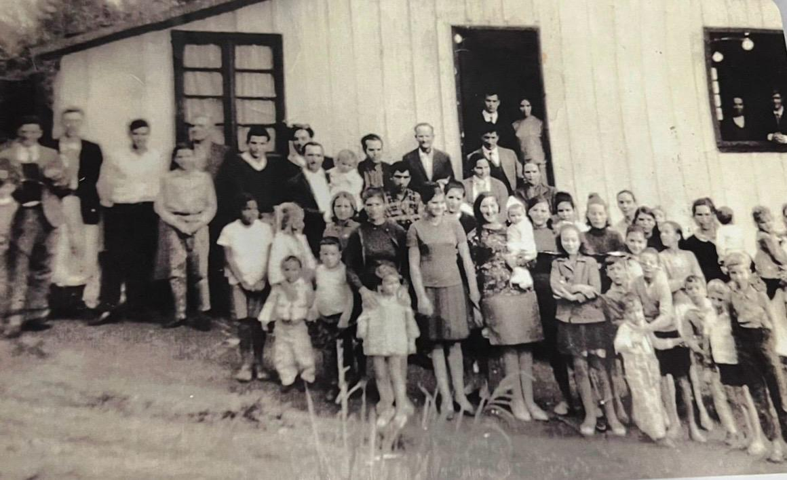
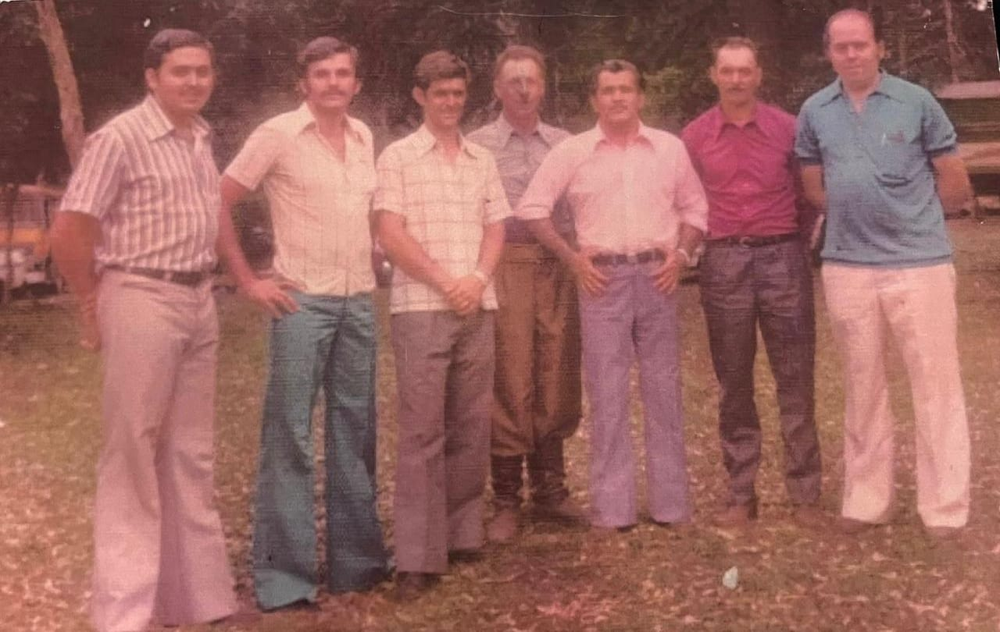
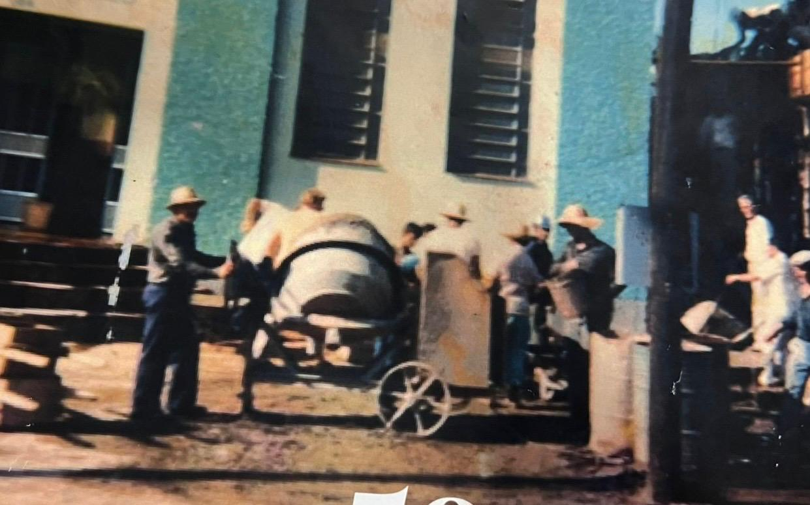
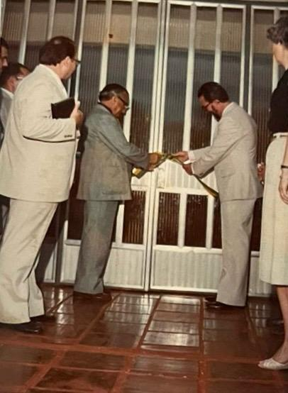
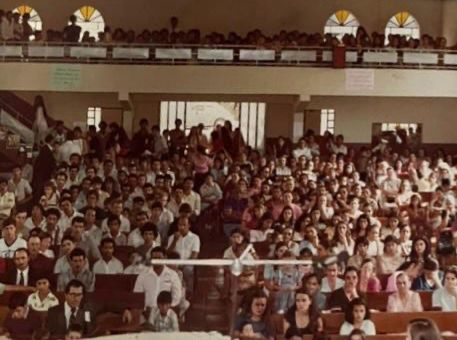
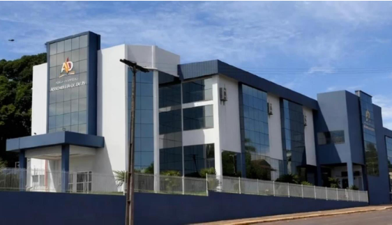

Surgimento da IEAD em Panambi - RS
Em fevereiro de 1964, a igreja de Ijuí, lederada pelo Pastor Alberto Kolenda, enviou o evangelista Alceu Moreira Vasgas para começar a obra missionária na pequena cidade de Panambi. Ele, a esposa e os seis filhos foram morar em um porão dos fundos de um posto de gasolina. A luta era grande, mas a vontade de fazer a obra de Deus crescer foi maior.
Em 12 de Abril de 1964, Alceu alugou uma casa no bairro Pavão e realizou o primeiro culto oficial, com a ajuda de músicos que vieram de Ijuí para colaborar com o novo campo que nascia, As famílias Jacobs, Mesadri e Azevedo foram as primeiras a abraçar a causa e aceitar a Cristo. A pequena igreja começou a crescer e a se espalhar por toda cidade.

O primeiro batismo aconteceu no dia 21 de Março de 1965, no Rio Fiúza, com 26 novos irmãos descendo às águas batismais, tendo a primeira Santa Ceia sendo realizada na nova casa do irmão Alceu, na Rua Carlos Knirr. A obra se manteve em crescimento, com 85 membros e a necessidade de uma maior estrutura, então alugaram um porão onde hoje é o Bairro Fátima, e ali realizavam os Cultos.
Em dexembro de 1967 o irmão Alceu foi transferido, então o Pastor Kolenda enviou o evangelista Vilmar B. da Cruz para assumir a igreja na cidade de Panambi. Este, por sua vez, coprou uma lambreta para conseguir manter o trabalho que ia cada vez mais longe, e já alcançava pontos de pregação nas Linhas Pinheirinho, Rincão Fundo, Morengaba, Fiúza, e na residência do irmão Maurício Pithan de Sauza, no bairro Italiana. Em 1968, a espossa do Pastor Kolenda, irmã Lourdes, colocou um programa evangelístico na Rádio Panambi (atual Sul Brasileira) que esteve no ar até 2018. Nesses 40 anos, a dereção desse trabalho esteve nas mãos do irmão Rubens Portes Batista.
O primeiro templo da Assembleia de deus foi construido por meio da doação de um terrenos, feita
pelo irmão Maurício Pithan de Souza, e construída com os materiais da casa do
irmão Dorvalino Oliveira, que a doou para ser desmanchada, e assim, poderam
realizar a construção. Após a conclusão do templo, o irmão Maurício também doou madeiras para a
construção de bancos, estes foram feitos pelo evangelista Vilmar e irmãos da igreja.
A obra permaneceu crescente, e assim como em Atos 6, deu-se a necessidade de ajudar o
encarregado do campo. Sendo assim, em 1° de Maio de 1970 o Pr. Kolenda designou os primeiros
presbíteros da igreja, sendo eles: Dorvalino Mendes Oliveira, Abraão Batesta e Pompilio
Dessbesel.

No dia 4 de janeiro de 1973, o presbítero Asselino Bernardo Alves é empossado como encarregado do campo de Panambi, pelo Pastor João Ferreira Filho. A obra permaneceu crescendo e, em 3 de aio de 1975 o primeiro carro da igreja é comprado, sendo um Aero Willis Ford ano 70.
Com a necessidade notória de um novo templo que comportasse todos os membros, os irmãos se uniram para arcar com os custos e, em 31 de janeiro de 1976, um novo terreno foi comprado na Rua Andrade Neves, Nº 594, contendo 800m². A inauguração do novo templo matriz ocorreu no dia 8 de fevereiro de 1981, com a presença do Pastor João Ferreira Filho e do encarregado Laudelino Ribas Alves, que era pastor auxiliar em Ijuí e assumiu o campo e 14 de outubro de 1979. A igreja sede da Assembleia de Deus permaneceu neste endereço até o ano de 2020.

Um fato fundamental para o desenvolvimento da IEAD na cidade de Panambi aconteceu no dia 1° de junho de 1982, onde o Pr. João Ferreira Filho, com a aprovação dos pastores da Convenção dos Pastores da Assembleia de Deus do RS, realizou a emancipação da igreja em Panambi, após 18 anos de trabalho. O primeiro pastor-presidente foi o Pr. Laudelino Ribas Alves. Após 12 anos de trabalho na cidade, e uma colaboração significativa no crescimento que a IEAD teve em Panambi, com a construção de diversas congregações nos bairros e um prédio de dois andares ao lado da matriz, que contava com casa pastoral e salão social, o Pr. Laudelino se despede da igreja local e vai atender o campo de São Sepé – RS.

Em 1991, o segundo pastor presidente assume o campo da cidade: o Pr. Antônio Milton Cardias, com o Pr. Marceliano Nogueira sendo segundo pastor presidente e um amplo quadro de obreiros para auxiliá-los. Durante esse período, a igreja teve um grande crescimento e desenvolvimento, com a construção de novas congregações nos bairros Pavão, Jardim Paraguai, Esperança, Kuhn, Italiana e Zona Norte. Uma característica que sempre esteve presente na Assembleia de Deus em Panambi é a dedicação à obra missionária, trabalho que se iniciou com o Pr. Laudelino e o Pr. Milton permaneceu investindo, levando missionários para o Paraguai, Nordeste do Brasil e outras cidades de nosso estado.
Como resultado de anos investindo em missões, por amor às almas perdidas, a igreja matriz já não conseguia comportar todos os seus membros, principalmente em cultos de Santa Ceia e congressos. Mesmo com reformas de ampliação, o templo não era suficiente para o grande número de irmãos, então, no ano de 2013, decidiu-se pelo Pastor Milton, juntamente com a Diretoria e Liderança da Igreja, procurar um local para a construção de um novo templo, que fosse maior e trouxesse mais conforto aos irmãos.
Na época, o pastor presidente, juntamente com o prefeito da cidade, Sr. Miguel Schmitt Prym, concordaram na troca do terreno na Rua Andrade Neves e suas construções, por um local na Avenida Presidente Kennedy, com mais de 4 mil metros de área. As obras se iniciaram no dia 4 de junho de 2014, com o projeto da nova Igreja Sede tendo dois andares, 25 metros de largura e 65 metros de comprimento, resultando em 4.192 m² de construção e capacidade de até 3.000 pessoas no andar de cima, e de 565 no andar debaixo.

O Pr. Milton Cardias é jubilado, então, o terceiro pastor-presidente assume no dia 20 de junho de 2019, oriundo de Rio Grande – RS. O Pr. Valdir Rodrigues Junior é empossado da obra em Panambi, onde permanece liderando até os dias de hoje. O novo templo é inaugurado no dia 17 de agosto de 2020, após a conclusão do térreo da igreja em julho do mesmo ano. Desde então, toda a parte administrativa da igreja, congressos, reuniões e cultos de Santa Ceia são realizados na matriz. Parte do andar de cima foi inaugurado em uma Santa Ceia, no dia 09 de dezembro de 2024, onde os cultos são realizados atualmente.

Em resumo, vê-se em toda a história da Igreja Assembleia de Deus na cidade de Panambi, pessoas de fé, que trabalharam sem cessar para que a denominação crescesse e chegasse até nós. Vemos o agir de Deus e a forma como, em tudo, Ele trabalhou, cuidando de seus servos e dando força para que eles suportassem as perseguições, preconceitos e rejeições, deixando para nós exemplos de persistência, coragem e devoção.
Atualmente, a igreja conta com mais de 2.200 membros, o Pastor Presidente mais 6 pastores filiados a CIEPADERGS, 67 Evangelistas, 79 Presbíteros, 154 Diáconos e 21 auxiliares (levantamento feito em março de 2024). Possuindo congregações em quase todos os bairros da cidade, levando o evangelho de forma simples, singela e amorosa, assim como Cristo fez.
Hoje a igreja possui diversos departamentos. Alguns são:
-
DEFADEP (Departamento da Família)
aqui ideia colocar quem criou o departamento e qual a sua finalidade dentro da igreja junto com nome dos lideres atuais.